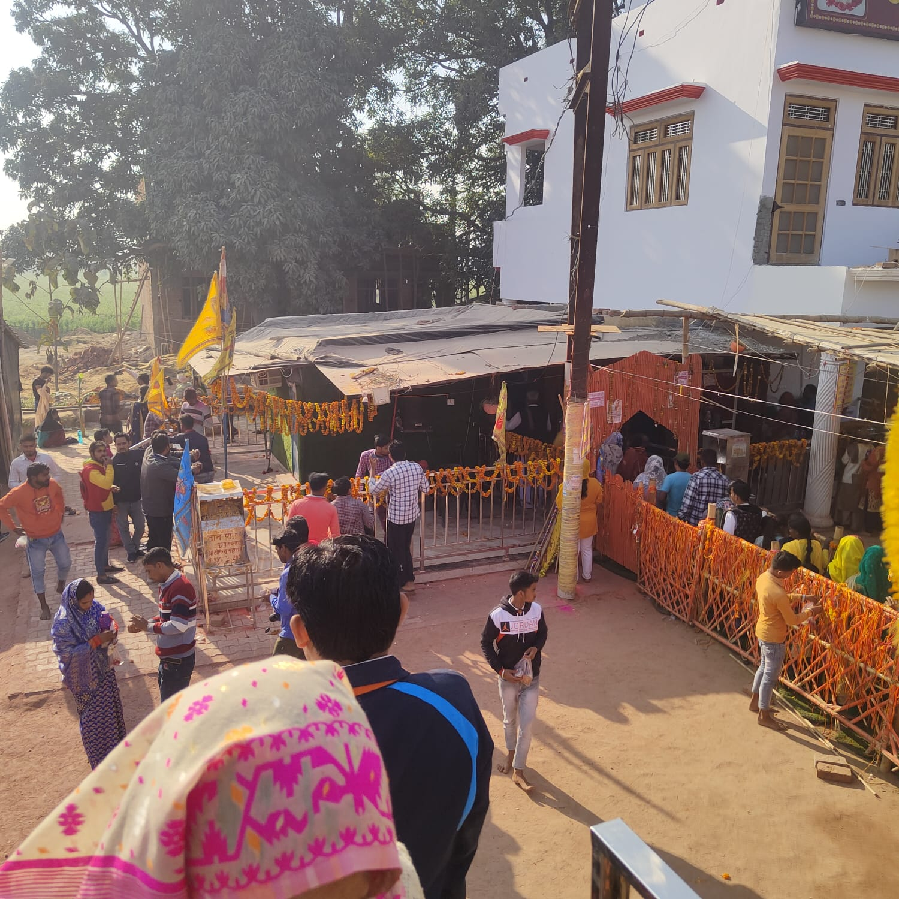
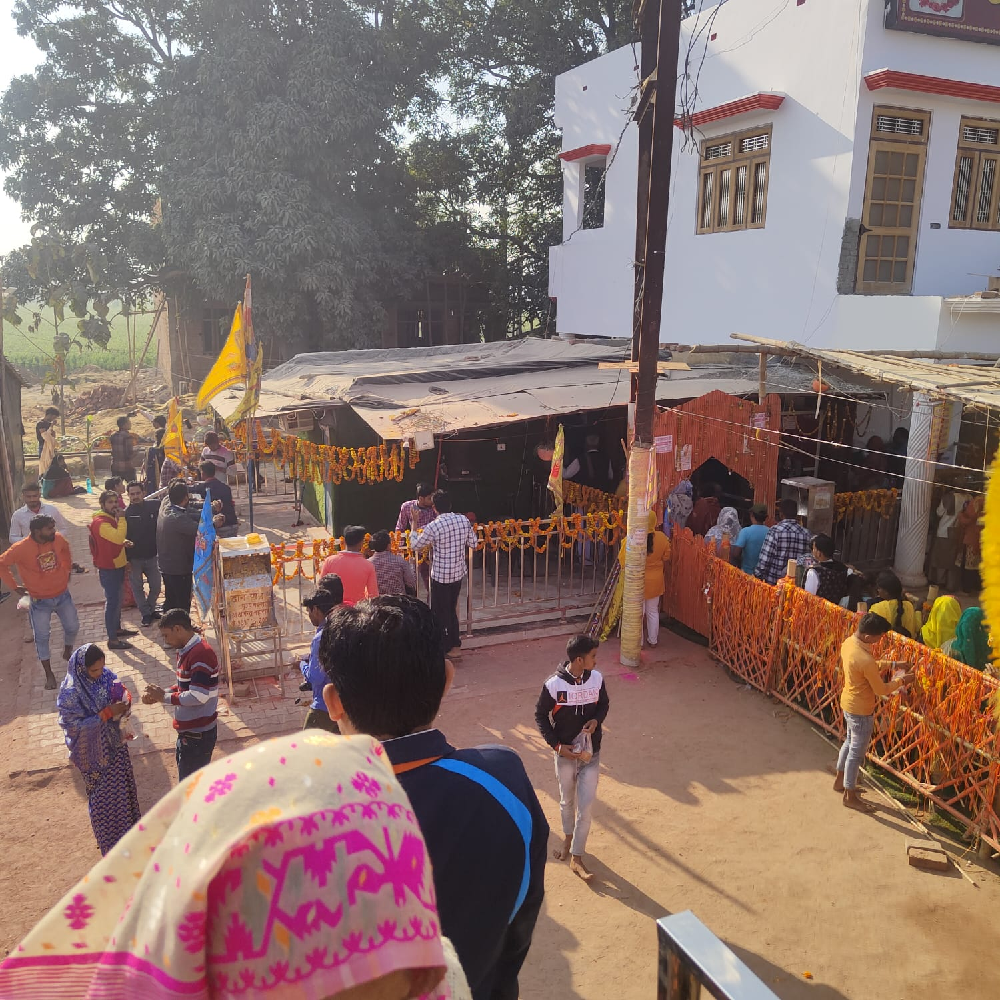

Manauna Dham
Pilgrim Information & Services


Darshan: 7 AM – 9 PM
Aarti: 8 AM & 5 PM
Best Time: June – December
Mahant Ji unavailable: Wednesday & Thursday
Shri Khatu Shyam Mandir, Manauna Village, Tehsil Aonla, Bareilly, Uttar Pradesh – 243301

 
